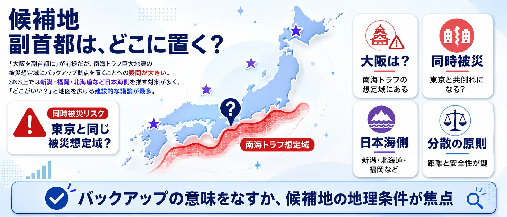
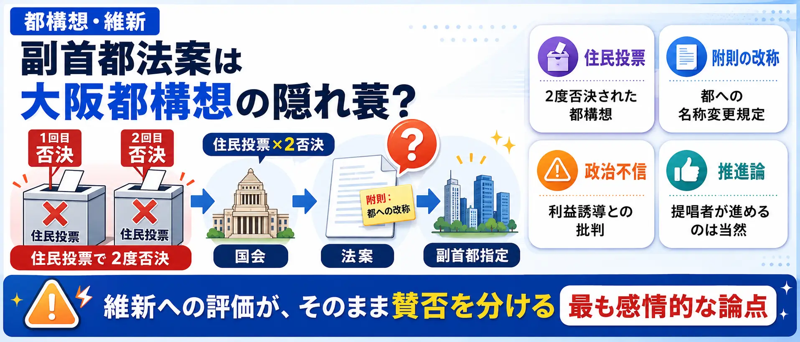
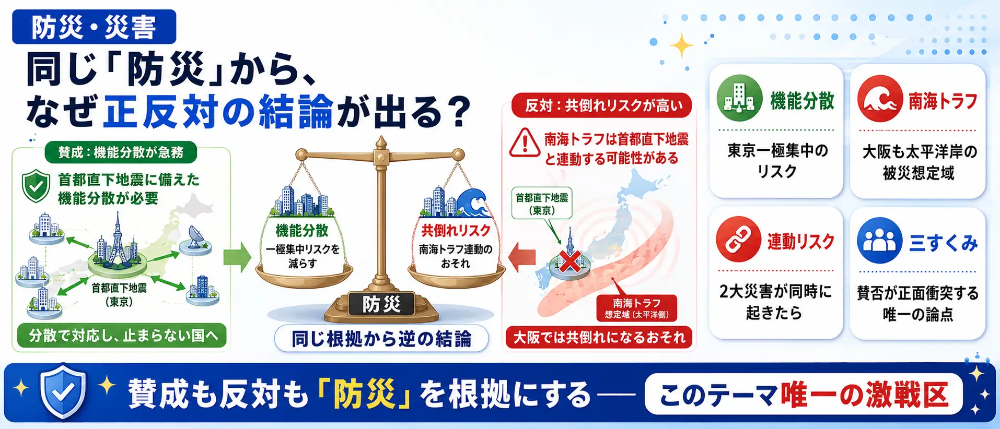
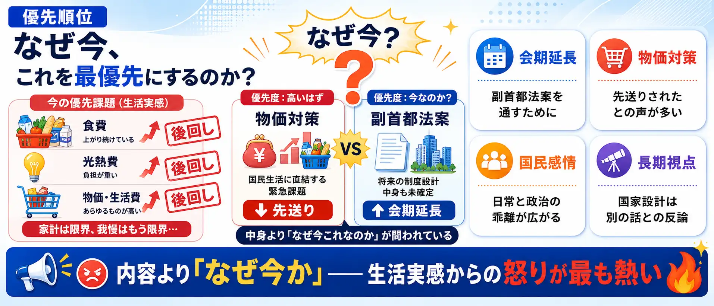

分析対象の意見
765件
収集した897件のうち意見と判定した投稿。AIが論点・立場・表現強度を分類
副首都、本当に必要？ 場所は大阪でいい？
Yahooリアルタイム検索で取得した公開投稿897件のうち、意見と判定した765件をAIが6つの論点に整理しました。世論調査ではなく、SNS反応サンプルの論点比較です。
収集した897件のうち意見と判定した投稿。AIが論点・立場・表現強度を分類
意見765件のうち522件。賛成・推進は125件、中立・情報は118件
意見の24%がこの論点に集まっています
賛否を述べた投稿が85%。残りはニュース共有など
副首都論点は「大阪を副首都にするか」だけではありません。法案の中身は何も決まっていないのか、候補地はなぜ大阪なのか、防災効果は本当にあるのか——6つの論点を図解で把握してから投票に進んでください。画像はタップで拡大できます。
定義・中身 — 「生煮え」のまま通していいのか162件
副首都の定義・統治体制・費用が法案に書かれていない。枠組みだけ先行する立法への批判が集まっています。
候補地 — 大阪？福岡？新潟？174件
南海トラフの被災想定域に副首都を置く意味があるのか。地図を広げる建設的な議論が続いています。

都構想・維新 — 「大阪ありき」への不信180件
住民投票で2度否決された大阪都構想を国政経由で実現しようとしているという疑念。強い言葉での批判が目立ちます。

防災・災害 — 同じ「防災」で正反対の結論97件
賛成も反対も「防災」を根拠にする。東京一極集中への危機感と、南海トラフ連動の共倒れリスクが対立。

費用・財源 — 「4兆円とも7.5兆円とも」41件
民間試算が4〜7.5兆円の幅、政府答弁は「現時点では分からない」。物価高の中での巨大事業への不信。
優先順位 — 「物価対策どこ行った」70件
法案の中身より「なぜ今これなのか」を問う怒り。生活実感からの強い言葉が多い論点です。

使い方: 6つの論点を図解で確認してから、次の投票で「自分が一番気になる論点」を選んでください。
2026年7月、与党・日本維新の会・チームみらいの修正合意により、首都機能のバックアップ都市「副首都」を政令で指定できるようにする法案が衆院通過目前となりました。大阪を軸に検討が進む一方、「大阪ありき」批判や制度設計の不透明さへの疑問も広がっています。
1あなたが最も気になる論点をタップ （全2問）
※ 世論調査ではありません。投票は匿名で集計され、サーバーに保存されます。
※ 世論調査ではありません。
中心の「副首都法案」を6つの論点セクターが囲みます。扇の大きさは投稿数、中心からの距離は感情の熱量（外側ほど激しい）、点の色はスタンス（緑=肯定的 / 赤=否定的 / 灰=中立）。点をクリックすると元のXポストを開きます。
「副首都法案は大阪都構想の隠れ蓑」「維新の利権のための法案」という不信が中心で、附則の「都」への名称変更手続きが疑念に拍車をかけています。一方で「大阪ありきで何が悪い。提唱し続けてきたのは維新だけ」という真っ向からの反論もあり、維新への評価がそのまま賛否を分けています。
「南海トラフで東京と共倒れになる大阪はない」という地理的リスク論から、福岡・新潟・北海道・リニア沿線など対案が飛び交う論点です。法案そのものへの賛否とは独立した「どこがいい？」談義として盛り上がっており、怒りではなく地図を広げて語る投稿が目立ちます。
行政学者が指摘した「生煮え」という言葉が拡散し、「副首都の定義が法案に書かれていない」「基本方針や政令の前に指定するのは、家の設計前に契約させるようなもの」という制度批判が中心です。感情的な罵倒より、手続き論・立法論からの冷静な批判が多いのが特徴です。
賛否が正面からぶつかる論点です。興味深いのは、両陣営とも「防災」を根拠にしていること。賛成派は「首都直下地震に備えて一刻も早く機能分散を」、反対派は「南海トラフは首都直下と連動する。大阪では共倒れだ」と、同じ災害リスクから正反対の結論を導いています。
「消費税減税は先送りなのに副首都法案は会期延長までして通すのか」という、生活実感からの怒りが中心の論点です。法案の中身ではなく「なぜ今これなのか」を問うており、修正合意に加わったチームみらいへの失望の声も含まれます。
「兆円単位の費用がかかるのに試算が示されていない」「副首都になれば住民税が上がるのでは」という財政批判の論点です。国会で費用を問われて「現時点では分からない」と答弁されたことが火に油を注ぎました。少数派からは「整備新幹線も五輪も、大型プロジェクトは基本方針を決めてから予算を積むのが普通」という手続き擁護もあります。
副首都法案は、首都・東京の機能が大規模災害などで損なわれた場合に備え、バックアップ機能を担う「副首都」を政令で指定できるようにする法案です。日本維新の会が長年掲げてきた構想で、2026年7月、与党とチームみらいの修正合意により衆院通過が目前となりました。国会の会期も、この法案の成立を狙って延長が調整されています。
推進する立場からは「首都直下地震や南海トラフへの備えとして機能分散は不可欠」「東京一極集中を是正し多極成長型の国家をつくる一歩」という主張があります。一方で、法案には副首都の定義や統治体制、費用の枠組みが具体的に書かれておらず、行政学者からも「生煮え」との指摘が出ています。また大阪を軸に検討が進むことから「住民投票で否決された大阪都構想の実現が本当の狙いではないか」という不信も根強くあります。
SNS上の反応は反対・慎重が多数ですが、その中身は「そもそも不要」「中身が決まっていない」「場所が大阪なのが問題」「今やることではない」と論点ごとに大きく異なります。どの論点を重視するかで、同じ「反対」でも風景がまったく違って見えるテーマです。
法案反対が522件で、法案賛成・推進の125件を大きく上回ります。賛否を明示しない中立・情報は118件で、意見765件の15%です。
意見765件のうち24%。次点は候補地の174件です。
感情の強さを0〜2で数値化した全体平均。論点別では都構想・維新が1.51で最も高く、候補地の0.92が最も冷静です。
| 都構想・維新 | 180 |
|---|---|
| 候補地 | 174 |
| 定義・中身 | 162 |
| 防災・災害 | 97 |
| 優先順位 | 70 |
| 費用・財源 | 41 |
| その他 | 41 |
| 合計（意見） | 765 |
| 法案反対 | 522 |
|---|---|
| 中立・情報 | 118 |
| 法案賛成・推進 | 125 |
| high（強い） | 264 |
|---|---|
| medium（中） | 364 |
| low（弱い） | 137 |
| 選んだ論点 | マーカーが置かれるセクター | マーカーの色 |
|---|---|---|
| 定義・中身 | 定義・中身 | 賛成=緑 / どちらでもない=灰 / 反対=赤 |
| 候補地 | 候補地 | |
| 都構想・維新 | 都構想・維新 | |
| 防災・災害 | 防災・災害 | |
| 費用・財源 | 費用・財源 | |
| 優先順位 | 優先順位 | |
| その他・わからない | その他 |